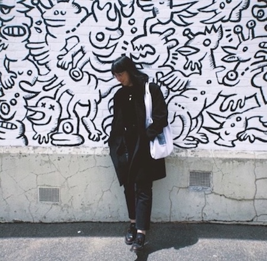

Hi, I'm Madeleine 👋. A junior web
developer and film enthusiast, currently located in
Adelaide, Australia.

I'm Madeleine and I am studying web
development at the University of
Adelaide coding bootcamp.
I spent the last decade travelling around the
world, settling down in Austin, Texas before moving to Manchester (UK) in late 2019. While stuck in lockdown I
completed my BA in Criminology where I spent my last semester studying
cyber crime. I moved back to Australian in 2020 where I decided to pursue coding head on! When I'm not hunched
over my macbook staring furiously at some code, you'll probably find me at the cinema! 😉
I started my coding career with Python
using Pycharm, then briefly worked with C++ in RStudio before enrolling in the
bootcamp to continue my studies.
So far, I have worked on projects for front-end as well as back-end and full stack development. While I am still
relatively new to coding, I have picked up many skills along the way and now have experience in the following: